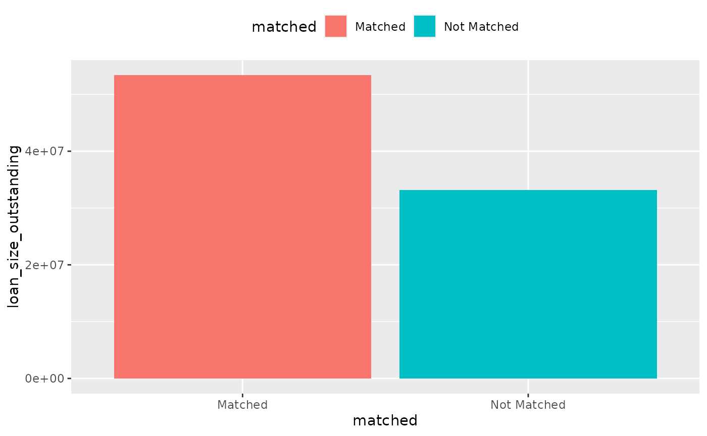
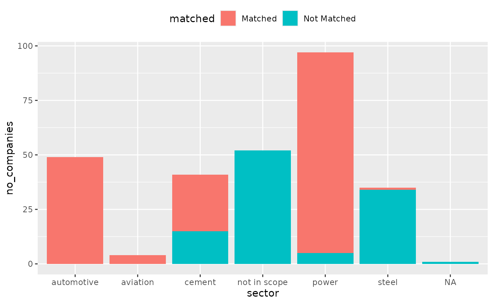

r2dii.match allows you to match loans from your loanbook to the companies in an asset-based company dataset. However, matching every loan is unlikely – some loan-taking companies may be missing from the asset-based company dataset, or they may not operate in the sectors 2DII focuses on (power, cement, oil and gas, shipping, aviation, coal, automotive, steel, and hdv). Thus, you may want to measure how much of the loanbook matched some asset. This article shows two ways to calculate such matching coverage:
Calculate the portion of your loanbook covered, by dollar value (i.e. using one of the
loan_size_*columns).Count the number of companies matched.
Setup
First we will need to load up the useful packages:
library(dplyr, warn.conflicts = FALSE)
library(purrr)
library(ggplot2)
library(r2dii.data)
library(r2dii.match)We will use example datasets from r2dii.data. To demonstrate our point, we create a loanbook dataset with two mismatching loans:
loanbook <- loanbook_demo %>%
mutate(
name_ultimate_parent =
ifelse(id_loan == "L1", "unmatched company name", name_ultimate_parent),
sector_classification_direct_loantaker =
ifelse(id_loan == "L2", 99, sector_classification_direct_loantaker)
)We will then run the matching algorithm on this loanbook:
matched <- loanbook %>%
match_name(abcd_demo) %>%
prioritize()Note that this matched dataset will contain only loans that were matched successfully. To determine coverage, we need to go back to the original loanbook dataset. We must determine the 2DII sectors of each loan, as dictated by the sector_classification_direct_loantaker column.
For this, we join the loanbook with the sector_classifications dataset, which lists all sector classification code standards used by ‘PACTA’. Unfortunately we need to work around two caveats (you may ignore them because they are conceptually uninteresting):
In the two datasets, the columns we want to merge by have different names. We use the argument
bytoleft_join()to merge the columnssector_classification_systemandsector_classification_direct_loantaker(fromloanbook) with the columnscode_systemandcode(fromsector_classifications), respectively.In the two datasets, the sector classification codes are represented with different data-types. We modify the column
sector_classification_direct_loantakerbeforeleft_join()so it has the same type as the corresponding columncode(otherwiseleft_join()throws an error), and again afterleft_join()to restore its original type.
merge_by <- c("code_system", "code") %>%
set_names(paste0("sector_classification_", c("system", "direct_loantaker")))
loanbook_with_sectors <- loanbook %>%
modify_at(names(merge_by)[[2]], as.character) %>%
left_join(sector_classifications, by = merge_by) %>%
modify_at(names(merge_by)[[2]], as.double)We can join these two datasets together, to generate our coverage dataset:
coverage <- left_join(loanbook_with_sectors, matched) %>%
mutate(
loan_size_outstanding = as.numeric(loan_size_outstanding),
loan_size_credit_limit = as.numeric(loan_size_credit_limit),
matched = case_when(
score == 1 ~ "Matched",
is.na(score) ~ "Not Matched",
TRUE ~ "Not Mached"
),
sector = case_when(
borderline == TRUE & matched == "Not Matched" ~ "not in scope",
TRUE ~ sector
)
)
#> Joining, by = c("id_loan", "id_direct_loantaker", "name_direct_loantaker",
#> "id_intermediate_parent_1", "name_intermediate_parent_1", "id_ultimate_parent",
#> "name_ultimate_parent", "loan_size_outstanding",
#> "loan_size_outstanding_currency", "loan_size_credit_limit",
#> "loan_size_credit_limit_currency", "sector_classification_system",
#> "sector_classification_input_type", "sector_classification_direct_loantaker",
#> "fi_type", "flag_project_finance_loan", "name_project", "lei_direct_loantaker",
#> "isin_direct_loantaker", "sector", "borderline")1. Calculate the portion of your loanbook covered by dollar value
From the coverage dataset, we can calculate the total loanbook coverage by dollar value. Let’s create two helper functions, one to calculate dollar-value and another one to plot coverage in general.
dollar_value <- function(data, ...) {
data %>%
group_by(matched, ...) %>%
summarize(loan_size_outstanding = sum(loan_size_outstanding))
}
plot_coverage <- function(data, x, y) {
ggplot(data) +
geom_col(aes({{x}}, {{y}}, fill = matched)) +
# Use more horizontal space -- avoids overlap on x axis text
theme(legend.position = "top")
}Let’s first explore all loans.

To calculate the total, in-scope, loanbook coverage:
coverage %>%
filter(sector != "not in scope") %>%
dollar_value() %>%
plot_coverage(matched, loan_size_outstanding)
Break down by sector
You may break-down the plot by sector:
coverage %>%
dollar_value(sector) %>%
plot_coverage(sector, loan_size_outstanding)
#> `summarise()` has grouped output by 'matched'. You can override using the
#> `.groups` argument.
Or even further, by matching level:
coverage %>%
mutate(matched = case_when(
matched == "Matched" & level == "direct_loantaker" ~ "Matched DL",
matched == "Matched" & level == "intermediate_parent_1" ~ "Matched IP1",
matched == "Matched" & level == "ultimate_parent" ~ "Matched UP",
matched == "Not Matched" ~ "Not Matched",
TRUE ~ "Catch unknown"
)) %>%
dollar_value(sector) %>%
plot_coverage(sector, loan_size_outstanding)
#> `summarise()` has grouped output by 'matched'. You can override using the
#> `.groups` argument.
2. Count the number of companies
You might also be interested in knowing how many companies in your loanbook were matched. It probably makes most sense to do this at the direct_loantaker level:
companies_matched <- coverage %>%
group_by(sector, matched) %>%
summarize(no_companies = n_distinct(name_direct_loantaker))
#> `summarise()` has grouped output by 'sector'. You can override using the
#> `.groups` argument.
companies_matched %>%
plot_coverage(sector, no_companies)
A Note on Sector Classifications and the borderline Flag
There are a zoo of sector classification code systems out there. Some are granular, some are not. Since we currently cover a particular portion of the supply chain (i.e. production), it is important we try to only match the ABCD with companies that are actually active in this portion of the supply chain.
An issue arises when, for example, a company is classified in the “power transmission” sector. In a perfect world, these companies would produce no electricity, and we would not try to match them. In practice, however, we find there is often overlap. For this reason, we introduced the borderline flag.
In the example below, we see two classification codes coming from the SIC classification standard:
r2dii.data::sic_classification %>%
filter(code %in% c(41111, 36200))
#> # A tibble: 2 × 4
#> code description sector borde…¹
#> <chr> <chr> <chr> <lgl>
#> 1 36200 manufacture of electricity distribution and control appa… power TRUE
#> 2 41111 generation power FALSE
#> # … with abbreviated variable name ¹borderlineNotice that the code 41111 corresponds to power generation. This is an identical match to 2DII’s power sector, and thus the borderline flag is set to FALSE. In contrast, code 36200 corresponds to the manufacture of electricity distribution and control apparatus. In a perfect world, we would set this code to not in scope, however there is still a chance that these companies produce electricity. For this reason, we have mapped it to power with borderline = TRUE.
In practice, if a company has a borderline of TRUE and is matched, then consider the company in scope. If it has a borderline of TRUE and isn’t matched, then consider it out of scope.